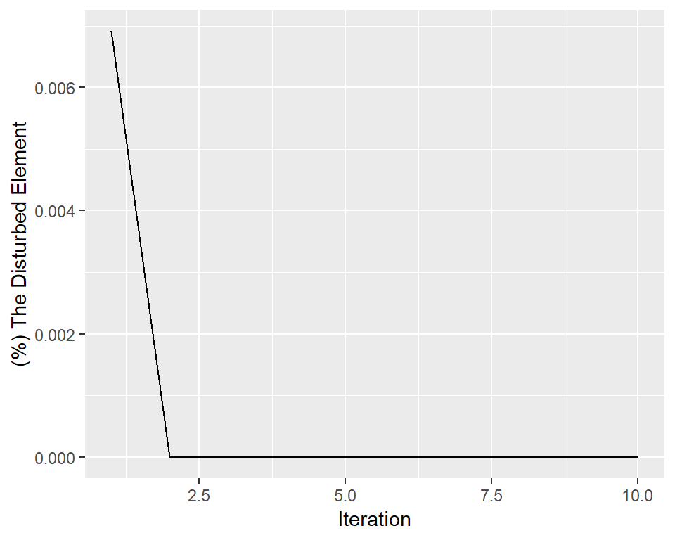

vignettes/mirtarbase_example.Rmd
mirtarbase_example.RmdThis vignette is about the integration of gene miRNA pairs and their expression dataset and analysis. Let’s try to analysis of these dataset with ceRNAnetsim. First of all, obtain the datasets for analysis:
#install ceRNAnetsim
#install.packages("devtools")
#devtools::install_github("selcenari/ceRNAnetsim")
library(ceRNAnetsim)
#>
#> Attaching package: 'ceRNAnetsim'
#> The following object is masked from 'package:stats':
#>
#> simulateNOTE that if the mirna:target dataset includes miRNA genes as targets, the priming_graph() function can get fail. Because, the function define to miRNAs and targets without distinguishing between uppercase or lowercase.
data("mirtarbasegene")
head(mirtarbasegene)
#> # A tibble: 6 x 2
#> miRNA Target
#> <chr> <chr>
#> 1 hsa-miR-20a-5p HIF1A
#> 2 hsa-miR-146a-5p CXCR4
#> 3 hsa-miR-122-5p CYP7A1
#> 4 hsa-miR-222-3p STAT5A
#> 5 hsa-miR-21-5p RASGRP1
#> 6 hsa-miR-148a-3p DNMT1TCGAbiolinks package from Bioconductor. The instructions of TCGAbiolinks can be followed. (For this step an other method (package) can be used.)data("TCGA_E9_A1N5_normal")
head(TCGA_E9_A1N5_normal)
#> # A tibble: 6 x 7
#> patient sample barcode definition ensembl_gene_id external_gene_n~
#> <chr> <chr> <chr> <chr> <chr> <chr>
#> 1 TCGA-E~ TCGA-~ TCGA-E~ Solid Tis~ ENSG00000000003 TSPAN6
#> 2 TCGA-E~ TCGA-~ TCGA-E~ Solid Tis~ ENSG00000000005 TNMD
#> 3 TCGA-E~ TCGA-~ TCGA-E~ Solid Tis~ ENSG00000000419 DPM1
#> 4 TCGA-E~ TCGA-~ TCGA-E~ Solid Tis~ ENSG00000000457 SCYL3
#> 5 TCGA-E~ TCGA-~ TCGA-E~ Solid Tis~ ENSG00000000460 C1orf112
#> 6 TCGA-E~ TCGA-~ TCGA-E~ Solid Tis~ ENSG00000000938 FGR
#> # ... with 1 more variable: gene_expression <dbl>
data("TCGA_E9_A1N5_tumor")
head(TCGA_E9_A1N5_tumor)
#> # A tibble: 6 x 7
#> patient sample barcode definition ensembl_gene_id external_gene_n~
#> <chr> <chr> <chr> <chr> <chr> <chr>
#> 1 TCGA-E~ TCGA-~ TCGA-E~ Primary s~ ENSG00000000003 TSPAN6
#> 2 TCGA-E~ TCGA-~ TCGA-E~ Primary s~ ENSG00000000005 TNMD
#> 3 TCGA-E~ TCGA-~ TCGA-E~ Primary s~ ENSG00000000419 DPM1
#> 4 TCGA-E~ TCGA-~ TCGA-E~ Primary s~ ENSG00000000457 SCYL3
#> 5 TCGA-E~ TCGA-~ TCGA-E~ Primary s~ ENSG00000000460 C1orf112
#> 6 TCGA-E~ TCGA-~ TCGA-E~ Primary s~ ENSG00000000938 FGR
#> # ... with 1 more variable: gene_expression <dbl>data("TCGA_E9_A1N5_mirnatumor")
head(TCGA_E9_A1N5_mirnatumor)
#> # A tibble: 6 x 6
#> barcode mirbase_ID miRNA Precusor total_read total_RPM
#> <chr> <chr> <chr> <chr> <int> <dbl>
#> 1 TCGA-E9-A1N5-01A-1~ MIMAT0000062 hsa-let-7~ MI00000~ 45725 20802.
#> 2 TCGA-E9-A1N5-01A-1~ MIMAT0004481 hsa-let-7~ MI00000~ 100 45.5
#> 3 TCGA-E9-A1N5-01A-1~ MIMAT0010195 hsa-let-7~ MI00000~ 6 2.73
#> 4 TCGA-E9-A1N5-01A-1~ MIMAT0000063 hsa-let-7~ MI00000~ 43489 19785.
#> 5 TCGA-E9-A1N5-01A-1~ MIMAT0004482 hsa-let-7~ MI00000~ 126 57.3
#> 6 TCGA-E9-A1N5-01A-1~ MIMAT0000064 hsa-let-7~ MI00000~ 2002 911.
data("TCGA_E9_A1N5_mirnanormal")
head(TCGA_E9_A1N5_mirnanormal)
#> # A tibble: 6 x 6
#> barcode mirbase_ID miRNA Precusor total_read total_RPM
#> <chr> <chr> <chr> <chr> <int> <dbl>
#> 1 TCGA-E9-A1N5-11A-4~ MIMAT0000062 hsa-let-7~ MI00000~ 67599 37068.
#> 2 TCGA-E9-A1N5-11A-4~ MIMAT0004481 hsa-let-7~ MI00000~ 132 72.4
#> 3 TCGA-E9-A1N5-11A-4~ MIMAT0010195 hsa-let-7~ MI00000~ 57 31.3
#> 4 TCGA-E9-A1N5-11A-4~ MIMAT0000063 hsa-let-7~ MI00000~ 47266 25918.
#> 5 TCGA-E9-A1N5-11A-4~ MIMAT0004482 hsa-let-7~ MI00000~ 126 69.1
#> 6 TCGA-E9-A1N5-11A-4~ MIMAT0000064 hsa-let-7~ MI00000~ 14554 7981.
TCGA_E9_A1N5_mirnanormal%>%
inner_join(mirtarbasegene, by= "miRNA")%>%
inner_join(TCGA_E9_A1N5_normal, by = c("Target"= "external_gene_name"))%>%
select(Target, miRNA, total_read, gene_expression)%>%
distinct()->TCGA_E9_A1N5_mirnagene
TCGA_E9_A1N5_mirnagene%>%
group_by(Target)%>%
mutate(gene_expression= max(gene_expression))%>%
distinct()%>%
ungroup()->TCGA_E9_A1N5_mirnagene
TCGA_E9_A1N5_tumor%>%
inner_join(TCGA_E9_A1N5_normal, by= "external_gene_name")%>%
select(patient = patient.x, external_gene_name, tumor_exp = gene_expression.x, normal_exp = gene_expression.y)%>%
distinct()%>%
inner_join(TCGA_E9_A1N5_mirnagene, by = c("external_gene_name"= "Target"))%>%
filter(tumor_exp != 0, normal_exp != 0)%>%
mutate(FC= tumor_exp/normal_exp)%>%
arrange(desc(FC))
#> # A tibble: 132,268 x 8
#> patient external_gene_n~ tumor_exp normal_exp miRNA total_read
#> <chr> <chr> <dbl> <dbl> <chr> <int>
#> 1 TCGA-E~ PVALB 804 2 hsa-~ 1963
#> 2 TCGA-E~ RIMS4 8903 24 hsa-~ 5
#> 3 TCGA-E~ RIMS4 8903 24 hsa-~ 4795
#> 4 TCGA-E~ RIMS4 8903 24 hsa-~ 56
#> 5 TCGA-E~ RIMS4 8903 24 hsa-~ 47
#> 6 TCGA-E~ RIMS4 8903 24 hsa-~ 994
#> 7 TCGA-E~ RIMS4 8903 24 hsa-~ 12
#> 8 TCGA-E~ RIMS4 8903 24 hsa-~ 8
#> 9 TCGA-E~ RIMS4 8903 24 hsa-~ 14
#> 10 TCGA-E~ RIMS4 8903 24 hsa-~ 1
#> # ... with 132,258 more rows, and 2 more variables: gene_expression <dbl>,
#> # FC <dbl>
#HIST1H3H : non-isolated gene. 30 FC.The analysis is performed based on amounts of miRNAs and targets as seen. Firstly, we tried to find optimal iteration for the network when simulation start with HIST1H3H node.
iteration_graph(as.data.frame(TCGA_E9_A1N5_mirnagene), competing_count = gene_expression, miRNA_count = total_read, node_name = "HIST1H3H", .iter = 10, how = 30)
The graph was shown that the change of HIST1H3H results in weak perturbation efficiency, although strong change. The results of the simulation was shown in following:
as.data.frame(TCGA_E9_A1N5_mirnagene)%>%
priming_graph(competing_count = gene_expression, miRNA_count = total_read)%>%
update_nodes(once = TRUE)%>%
update_how("HIST1H3H", 30)%>%
update_nodes()%>%
simulate(10)
#> Warning in priming_graph(., competing_count = gene_expression, miRNA_count = total_read): First variable processes as competing and the second as miRNA.
#> # A tbl_graph: 15216 nodes and 136797 edges
#> #
#> # A directed acyclic simple graph with 1 component
#> #
#> # Node Data: 15,216 x 7 (active)
#> name type node_id initial_count count_pre count_current
#> <chr> <chr> <int> <dbl> <dbl> <dbl>
#> 1 CDK6 Comp~ 1 4669 4669. 4669.
#> 2 MYC Comp~ 2 11593 11593. 11593.
#> 3 BCL2 Comp~ 3 2445 2445. 2445.
#> 4 NKIR~ Comp~ 4 1519 1519. 1519.
#> 5 ITGB3 Comp~ 5 196 196. 196.
#> 6 NF2 Comp~ 6 1755 1755. 1755.
#> # ... with 1.521e+04 more rows, and 1 more variable:
#> # changes_variable <chr>
#> #
#> # Edge Data: 136,797 x 20
#> from to Competing_name miRNA_name gene_expression total_read dummy
#> <int> <int> <chr> <chr> <dbl> <int> <dbl>
#> 1 1 14473 CDK6 hsa-let-7~ 4669 67599 1
#> 2 2 14473 MYC hsa-let-7~ 11593 67599 1
#> 3 3 14473 BCL2 hsa-let-7~ 2445 67599 1
#> # ... with 1.368e+05 more rows, and 13 more variables: afff_factor <dbl>,
#> # degg_factor <dbl>, comp_count_list <list>, comp_count_pre <dbl>,
#> # comp_count_current <dbl>, mirna_count_list <list>,
#> # mirna_count_pre <int>, mirna_count_current <int>,
#> # mirna_count_per_dep <dbl>, effect_current <dbl>, effect_pre <dbl>,
#> # effect_list <list>, mirna_count_per_comp <dbl>
TCGA_E9_A1N5_tumor%>%
inner_join(TCGA_E9_A1N5_normal, by= "external_gene_name")%>%
select(patient = patient.x, external_gene_name, tumor_exp = gene_expression.x, normal_exp = gene_expression.y)%>%
distinct()%>%
inner_join(TCGA_E9_A1N5_mirnagene, by = c("external_gene_name"= "Target"))%>%
filter(tumor_exp != 0, normal_exp != 0)%>%
mutate(FC= tumor_exp/normal_exp)%>%
arrange(desc(normal_exp))
#> # A tibble: 132,268 x 8
#> patient external_gene_n~ tumor_exp normal_exp miRNA total_read
#> <chr> <chr> <dbl> <dbl> <chr> <int>
#> 1 TCGA-E~ COL1A1 582819 362641 hsa-~ 42
#> 2 TCGA-E~ COL1A1 582819 362641 hsa-~ 22
#> 3 TCGA-E~ COL1A1 582819 362641 hsa-~ 10
#> 4 TCGA-E~ COL1A1 582819 362641 hsa-~ 70463
#> 5 TCGA-E~ COL1A1 582819 362641 hsa-~ 52
#> 6 TCGA-E~ COL1A1 582819 362641 hsa-~ 806
#> 7 TCGA-E~ COL1A1 582819 362641 hsa-~ 27
#> 8 TCGA-E~ COL1A1 582819 362641 hsa-~ 1776
#> 9 TCGA-E~ COL1A1 582819 362641 hsa-~ 3
#> 10 TCGA-E~ COL1A1 582819 362641 hsa-~ 1
#> # ... with 132,258 more rows, and 2 more variables: gene_expression <dbl>,
#> # FC <dbl>
# ACTB 1.87 folditeration_graph(as.data.frame(TCGA_E9_A1N5_mirnagene), competing_count = gene_expression, miRNA_count = total_read, node_name = "ACTB", .iter = 10, how = 1.87)as.data.frame(TCGA_E9_A1N5_mirnagene)%>%
priming_graph(competing_count = gene_expression, miRNA_count = total_read)%>%
update_nodes(once = TRUE)%>%
update_how("ACTB", 1.87)%>%
update_nodes()%>%
simulate(10)
#> Warning in priming_graph(., competing_count = gene_expression, miRNA_count = total_read): First variable processes as competing and the second as miRNA.
#> # A tbl_graph: 15216 nodes and 136797 edges
#> #
#> # A directed acyclic simple graph with 1 component
#> #
#> # Node Data: 15,216 x 7 (active)
#> name type node_id initial_count count_pre count_current
#> <chr> <chr> <int> <dbl> <dbl> <dbl>
#> 1 CDK6 Comp~ 1 4669 4678. 4678.
#> 2 MYC Comp~ 2 11593 11619. 11619.
#> 3 BCL2 Comp~ 3 2445 2447. 2447.
#> 4 NKIR~ Comp~ 4 1519 1524. 1524.
#> 5 ITGB3 Comp~ 5 196 196. 196.
#> 6 NF2 Comp~ 6 1755 1757. 1757.
#> # ... with 1.521e+04 more rows, and 1 more variable:
#> # changes_variable <chr>
#> #
#> # Edge Data: 136,797 x 20
#> from to Competing_name miRNA_name gene_expression total_read dummy
#> <int> <int> <chr> <chr> <dbl> <int> <dbl>
#> 1 1 14473 CDK6 hsa-let-7~ 4669 67599 1
#> 2 2 14473 MYC hsa-let-7~ 11593 67599 1
#> 3 3 14473 BCL2 hsa-let-7~ 2445 67599 1
#> # ... with 1.368e+05 more rows, and 13 more variables: afff_factor <dbl>,
#> # degg_factor <dbl>, comp_count_list <list>, comp_count_pre <dbl>,
#> # comp_count_current <dbl>, mirna_count_list <list>,
#> # mirna_count_pre <int>, mirna_count_current <int>,
#> # mirna_count_per_dep <dbl>, effect_current <dbl>, effect_pre <dbl>,
#> # effect_list <list>, mirna_count_per_comp <dbl>When the gene that has low expression level with high changing was used for perturbation of network, it displayed low efficiency with comparison to the gene which has low changing in higher expression level.
If the perturbed node has lower target:total target ratio in group or groups, the efficiency of it can be weak, or vice versa. The efficiency of ACTB gene may be high for this reason. But, ACTB has not strong perturbation efficiency too. This could be arisen from low miRNA:target ratio or impotent target nodes which have very low expression levels.